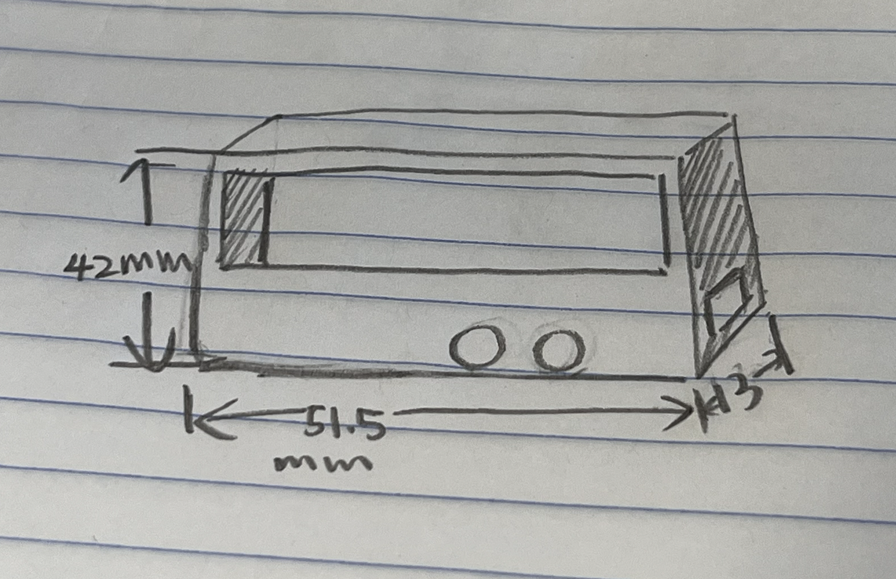
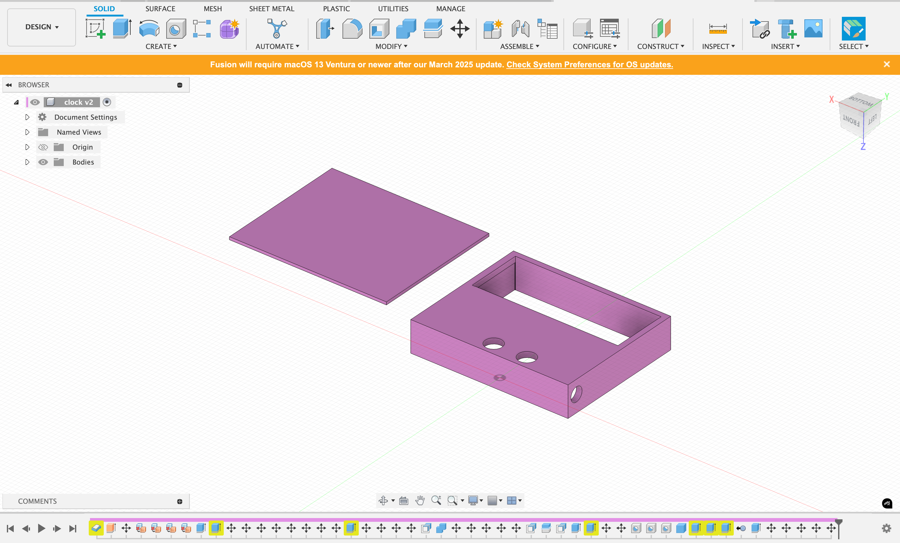
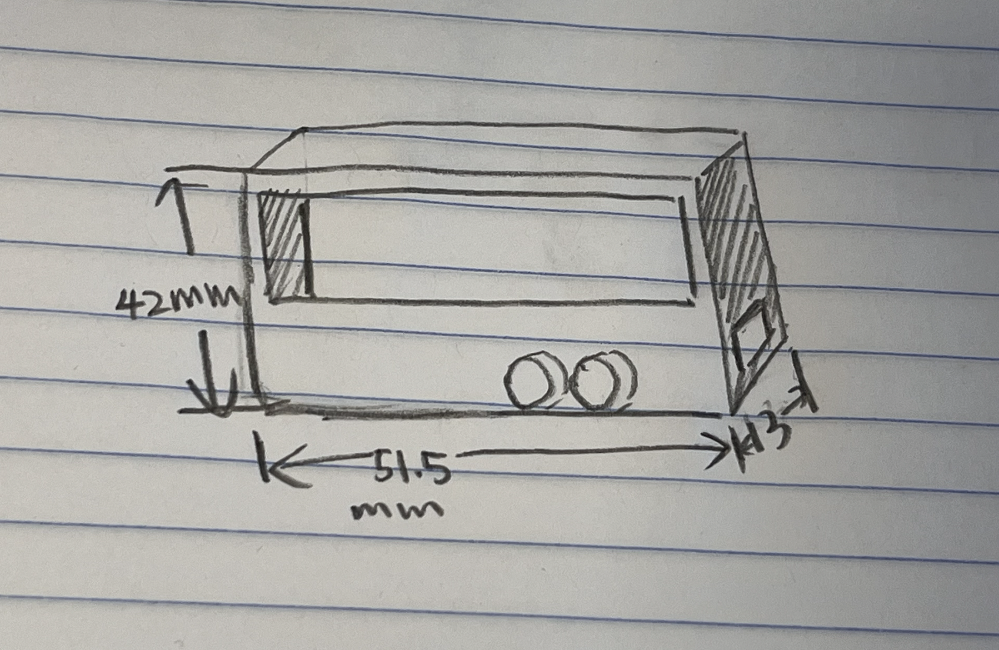
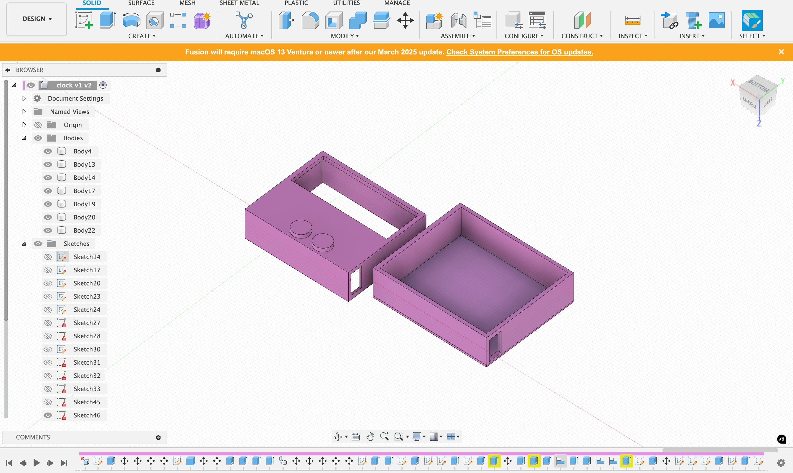
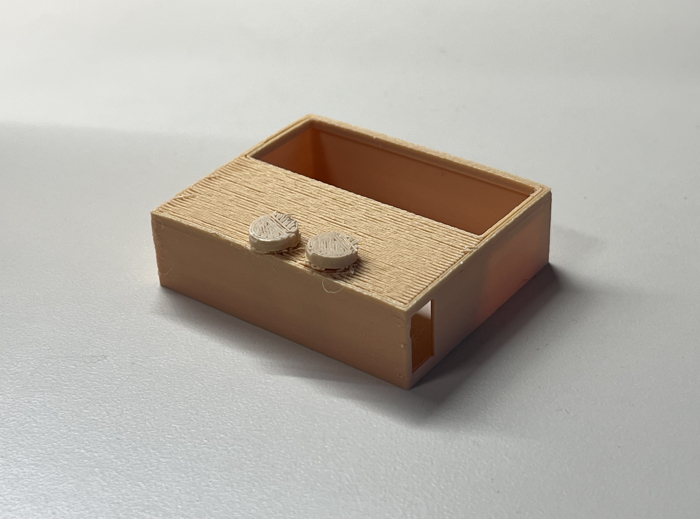
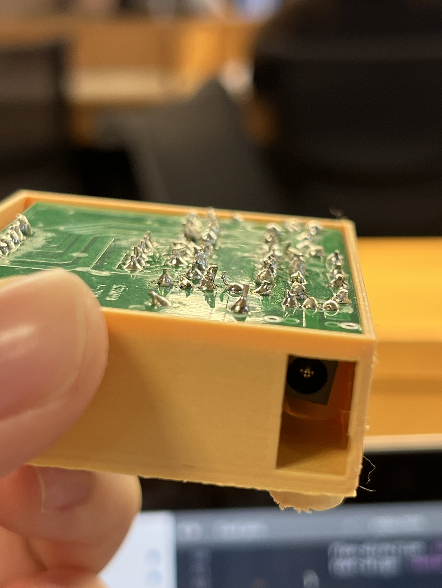
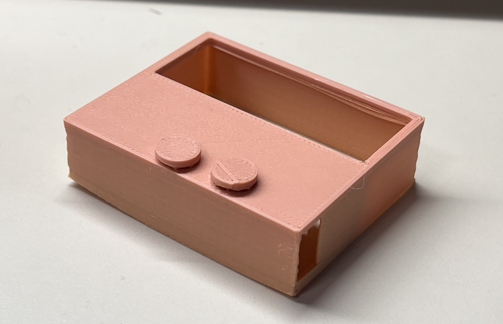
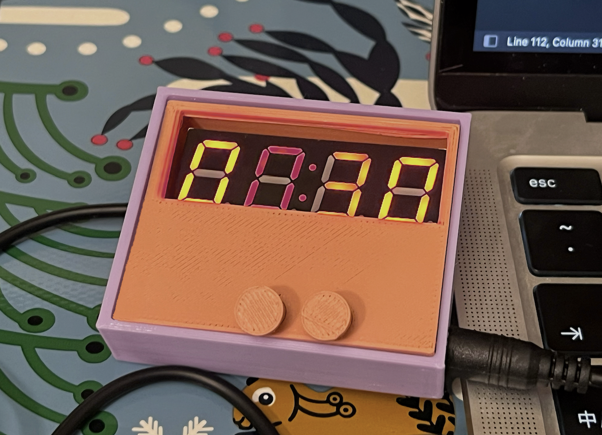

Process:
1. Brainstormed and drew my plan for a design for an enclosure on paper.
2. Took measurements of the electronics kit using digital calipers. Recorded.

3. Created the 1st version of enclosure in Fusion. Imported the 3mf file into Prusa Slicer and printed it.

4. I realized that the buttons on the clock couldn't be easily pressed because other elements were higher than the buttons, causing the enclosure's surface to be higher than the buttons' surface. Additionally, the hole for the power wire was too small.
5. Revised the sketch.

6. Went back to Fusion, designed two buttons, and placed them in the original button holes. I also enlarged the hole for the wire, imported the 3mf file into Prusa Slicer, and printed it.

7. Printed the second enclosure.

8. Found that the enclosure is not thick enough to hold the entire alarm clock.

9. Revised the Fusion model, increased the enclosure's thickness, and flipped the model (changed the order of printed layers) because I found that the support materials made the surface of the print rough.
10. Printed the third version of the enclosure.


Reflection:
Overall, the final version of my 3D printed enclosure met the goals of protecting the clock while keeping all functions working well.
However, I believe the aesthetics could be improved. For instance, the sharp corners could be more rounded. I plan to add more decorative elements to the enclosure in the future.
Also, considering the real usage situations when sketching might help a lot when designing something functional.
For instance, if I had thought about the process of pushing the buttons, I might not have needed to print the enclosure twice to fix the button problem.
In general, a more careful thought process before CAD is crucial, as the parameters and relationships between parts are not easy to change once they are in CAD.